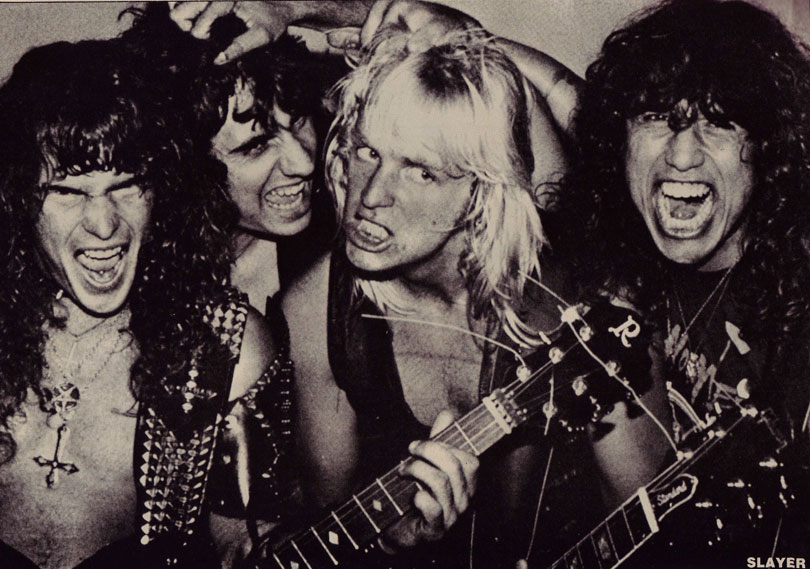

SLAYER

Slayer é uma banda norte-americana de thrash metal formada em 1981 por Kerry King e Jeff Hanneman, com Tom Araya no baixo e vocal e Dave Lombardo na bateria. Ganhou notoriedade com o álbum "Reign in Blood" (1986), considerado um dos mais pesados de todos os tempos. A banda é parte do "Big Four" do thrash metal, junto com Metallica, Megadeth e Anthrax. Conhecida por suas letras controversas e som agressivo, Slayer influenciou inúmeras bandas e deixou um legado duradouro no heavy metal. A banda encerrou suas atividades em 2019 após uma turnê de despedida
CREDITOS